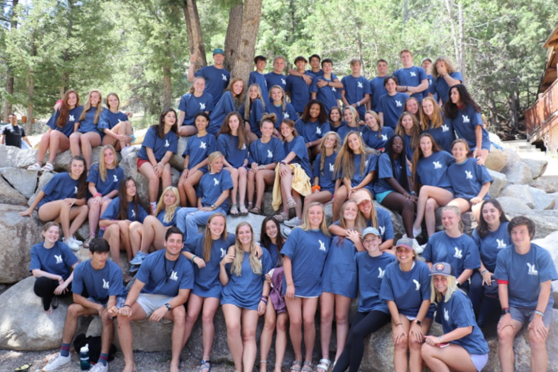

about young life
out there in a world of kids
Young Life doesn’t start with a program. It starts with adults concerned enough about kids to go to them, on their turf and in their culture, building bridges of authentic friendship. These relationships don’t happen overnight — they take time, patience, trust and consistency.
We believe in the power of presence. Kids’ lives are dramatically impacted when caring adults come alongside them, sharing God’s love with them. Because their leader believes in them, they begin to see that their lives have great worth, meaning and purpose.
This is the first step of a lifelong journey; the choices they make today, based upon God’s love for them, will impact future decisions … careers chosen, marriages formed and families raised. All ripples from the time when a Young Life leader reached out and entered their world.
Everyone is welcome in Young Life! Our programs are custom made for kids throughout their adolescent years. Young Life is the name of our organization and is also the term we use for our program with high school students. We call our middle school program WyldLife. The initiative for college and university students is called Young Life College.
Young Life’s multicultural ministry, focused on kids in diverse cultural communities and those in economically-depressed areas, is arguably the largest of its kind in the United States. We refer to our ministry to kids with disabilities as Capernaum and to our work with teen moms as YoungLives. In a partnership with Military Community Youth Ministries, Young Life reaches military teens through a program called Club Beyond. The Small Towns initiative brings Young Life to communities of fewer than 25,000 people.
Caring for Kids - Contact Work
Because kids don’t care how much you know till they know how much you care, Young Life leaders show they care by going where kids are, meeting them as they are, believing in who they can be. Within Young Life we call the persistent going out into the world of kids “contact work.” But kids just call it friendship.
A Party with a Purpose - Club
What is it about Young Life club that makes it the best night of the week for thousands of kids every week? We like to think of it as a party with a purpose. It’s controlled chaos that’s almost impossible to describe, but kids know it when they see it. And before the party ends, we share a simple message about God’s love for them. After all, that’s what the celebration is all about.
The Best Week of Their Life - Camp
Kids consistently tell us that Young Life camp is the best week of their life. That’s a rousing (and unsolicited) endorsement! But how else would you describe a week where deep relationships are forged in the midst of mind-boggling fun and where you experience and listen to what we believe is the greatest love story ever told?
A Time to Question, Learn and Grow - Campaigners
Campaigners is a weekly gathering for kids who wish to learn more or grow in their faith through study, service and leadership. We invite kids to actively follow Jesus Christ — and we’re with them for the long haul to help them take those steps of faith with unconditional love. Along the way, we encourage kids to celebrate their faith through participation in a local congregation.
Adults Who Care - Committee
Young Life is making a difference in the lives of kids around the world because we are supported by adults who care about kids in their community. For every talented Young Life staff person there is a team of dedicated leaders who works directly with kids. In each community, the local “committee,” comprised of parents, Young Life alumni and civic leaders, provides a foundation of financial, administrative and moral support for the local Young Life team.